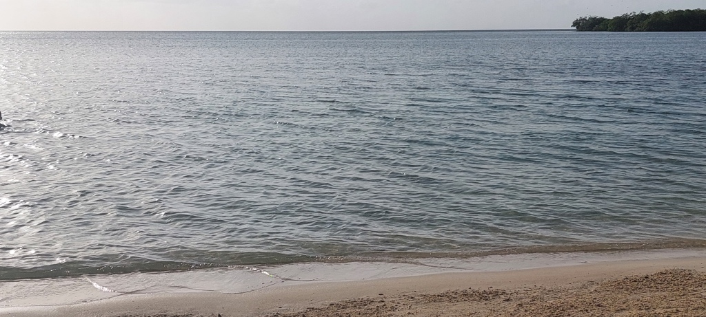
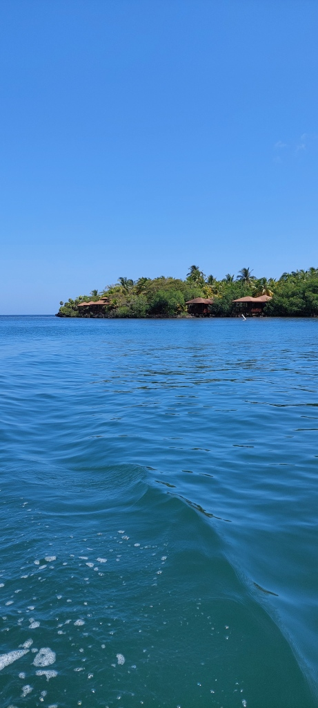
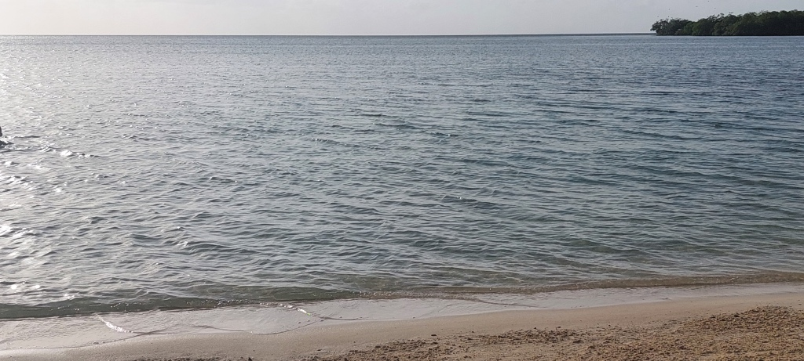
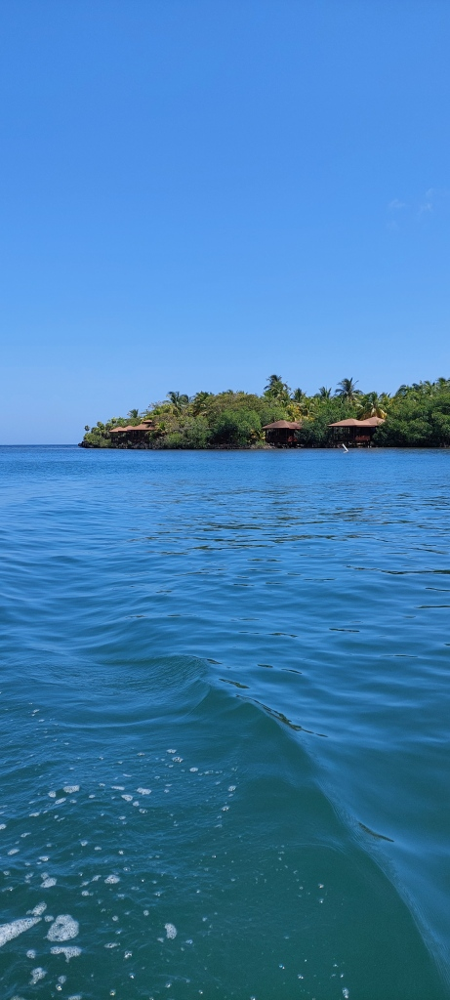
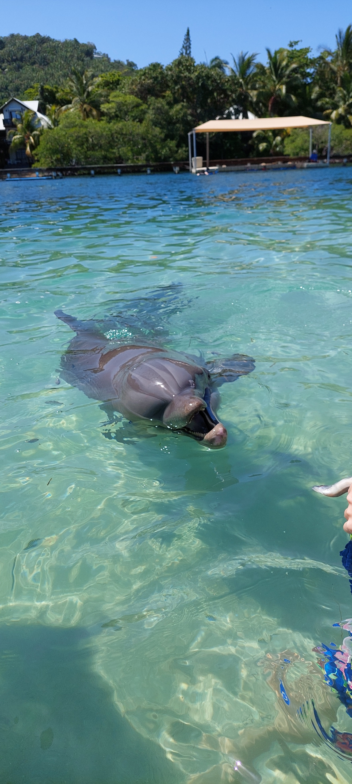
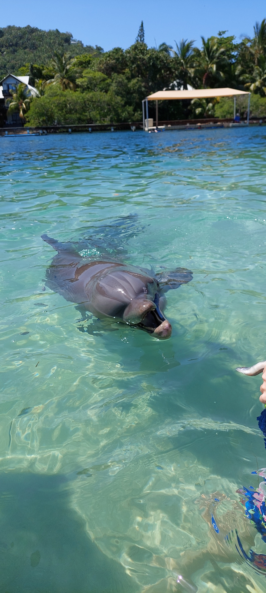

罗阿坦非常多样化。海洋和海滩美丽得令人难以置信。
 
罗阿坦非常多样化。海洋和海滩美丽得令人难以置信。
 
洪都拉斯的国庆节在9月15日庆祝，这是洪都拉斯的独立日。
9月15日对中美洲所有居民（危地马拉、洪都拉斯、萨尔瓦多、哥斯达黎加和尼加拉瓜，巴拿马除外）来说是一个重要日期，他们今天庆祝独立202周年。中美洲的独立斗争持续了近十年。这场运动始于1811年11月5日萨尔瓦多的第一次起义尝试，并在1821年9月15日实现，当时危地马拉、洪都拉斯、萨尔瓦多、哥斯达黎加和尼加拉瓜签署了中美洲独立法案。
克里斯托弗·哥伦布于1502年发现了中美洲和玛雅文化。仅仅几年后，西班牙人就将整个地区变成了他们的殖民地。直到1821年，经过300多年后，才争取到了脱离西班牙的独立。然而，当时洪都拉斯还不是一个独立国家：它最初与尼加拉瓜、萨尔瓦多、危地马拉和哥斯达黎加一起组成了中美洲联合省。1840年，洪都拉斯成为一个独立国家。今天，玛雅时代的遗迹仍然可以在货币中看到：它被称为伦皮拉，以一位反抗西班牙征服者的玛雅酋长命名。
洪都拉斯位于中美洲，介于北美洲和南美洲之间。它的邻国是西部的危地马拉和萨尔瓦多，以及东南部的尼加拉瓜。洪都拉斯的名称来自西班牙语单词hondura。这意味着深度，指的是洪都拉斯海岸外加勒比海的深水。气候是热带的。这意味着没有季节，只有雨季或旱季。平均温度约为27度。
自1982年以来，洪都拉斯一直是一个由总统领导的代议制民主国家。
来到罗阿坦，帮助异国动物。我们的动物保护项目非常多样化。
 

约翰娜和萨布丽娜在罗阿坦为残障儿童和成人做志愿工作。约翰娜和萨布丽娜是物理治疗师，能够在当地应用他们的知识。他们为洪都拉斯人民所做的社会工作受到了所有人的高度赞赏。我们SWHO团队也感谢你们在罗阿坦所做的志愿工作。
从特古西加尔巴到罗阿坦的国内航班大约需要1小时。这里有一些印象


抵达罗阿坦国际机场

我们热烈欢迎我们的志愿者萨布丽娜和约翰娜加入我们在罗阿坦的物理治疗医疗项目。在接下来的几周里，他们将在我们的医疗项目中做志愿工作。作为合格的物理治疗师，他们将帮助残障儿童和成人。在洪都拉斯的志愿工作非常受重视。
尽管大多数玛雅人离开了洪都拉斯，但在这个国家被征服者征服之前，这里仍然居住着一些这个民族的后裔。
征服者一词指的是16世纪在中美洲和南美洲宣称领土的西班牙和葡萄牙航海家。其中最著名的是克里斯托弗·哥伦布。
1502年，克里斯托弗·哥伦布首次抵达洪都拉斯，登陆加勒比海岸。因此，这个国家的名称来源于哥伦布以深邃的加勒比海命名的地方。从洪都拉斯出发，哥伦布继续前进，宣称美洲的其他地区为己有。在这种情况下，也被称为发现美洲或征服美洲。